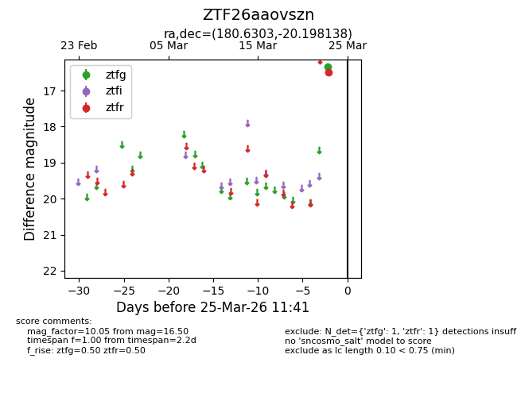
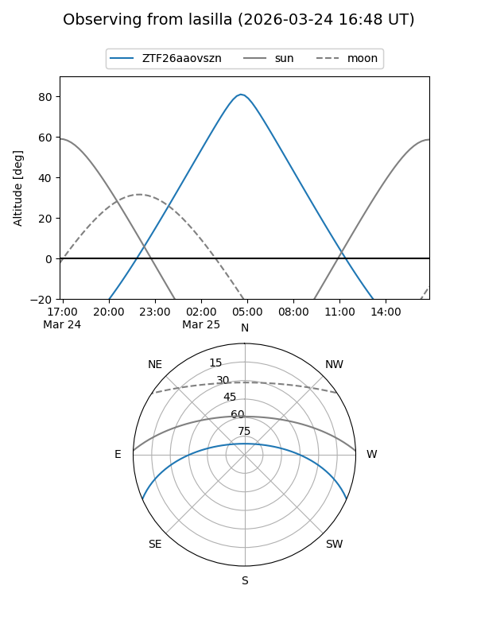
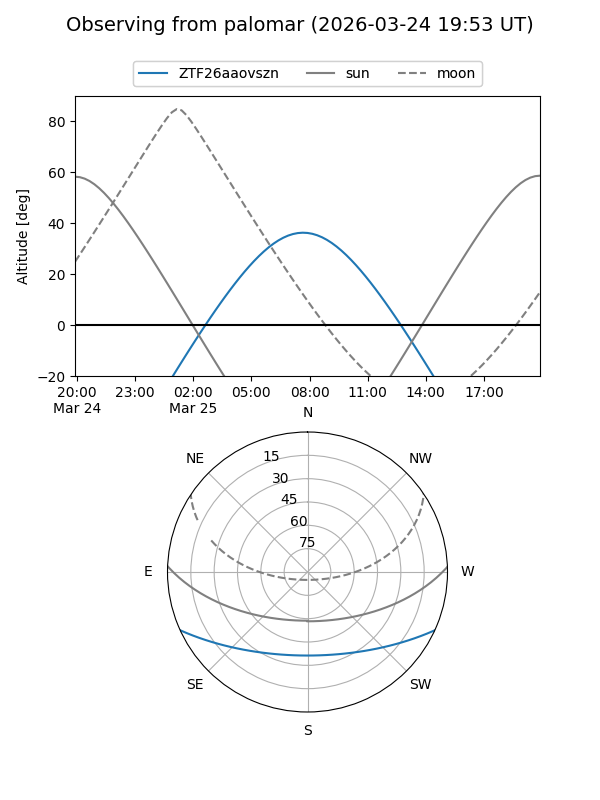

ZTF26aaovszn
Target ZTF26aaovszn at 2026-03-25 11:45
Aliases and brokers:
FINK: link
Lasair: link
ALeRCE: link
alt names
ZTF26aaovszn (ztf,fink_ztf)
Coordinates:
equatorial (ra, dec) = 180.6303,-20.19814
equatorial (HMS+DMS) = 12:02:31.28,-20:11:53.30
galactic (l, b) = (287.6086,+41.21357)
Flags:
Photometry:
last ztfg=16.34, ztfr=16.50
1 ztfg, 1 ztfr detections
Lightcurve

Visibility


Additional plots